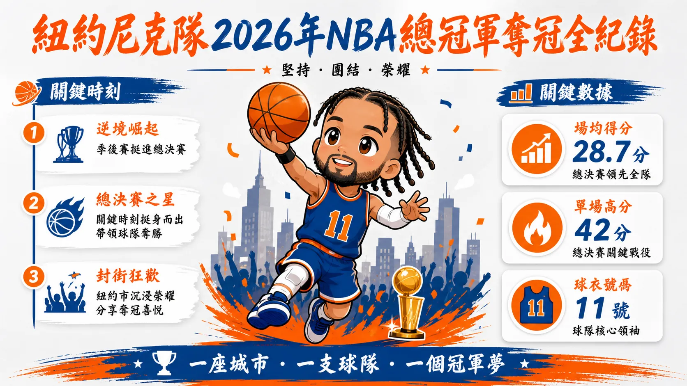
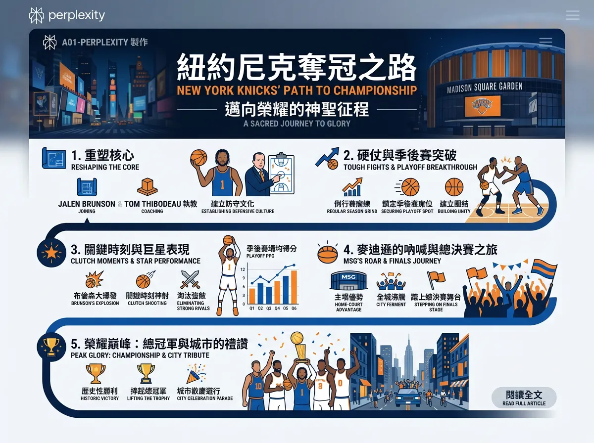
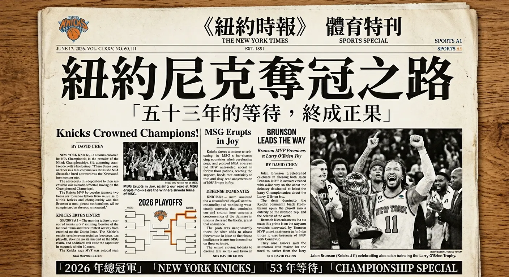
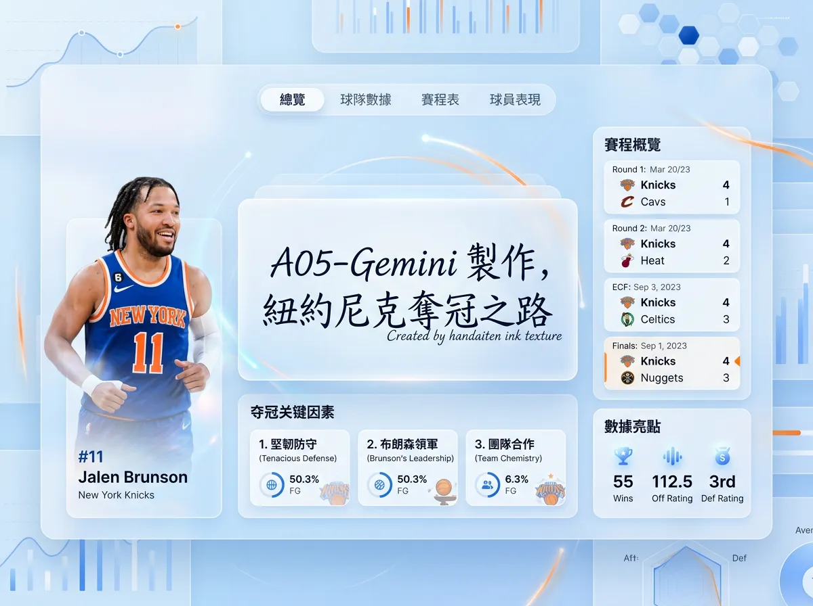

尼克隊介紹
球隊簡介
紐約尼克隊（New York Knicks）成立於 1946 年，是 NBA 歷史最悠久的球隊之一，也是東岸最具代表性的職籃品牌。
主場設於全球最著名的球館——麥迪遜廣場花園（Madison Square Garden，MSG），坐落於曼哈頓中城，素有「世界最知名運動場館」之稱。
球隊歷史上曾於 1970 年與 1973 年兩度奪得 NBA 總冠軍，由 Willis Reed 與 Walt Frazier 領銜的黃金陣容奠定了傳奇地位。
然而此後長達 53 年的等待，使尼克隊成為 NBA 奪冠旱魃之最——直到 2026 年 6 月 19 日，Jalen Brunson 以 G5 獨得 45
分，終結了這段史詩般的漫長等待，在聖城拿下第三座總冠軍。
2025–26 球季關鍵球員
| # | 球員名 | 位置 | 特色 |
|---|---|---|---|
| 11 | Jalen Brunson | 控衛 PG | Finals MVP，G5 攻下 45 分；超強關鍵時刻控場能力，全隊精神領袖 |
| 32 | Karl-Anthony Towns | 中鋒 C | 交易加盟後成為禁區支柱，具備外線射程的雙向大個子 |
| 25 | Mikal Bridges | 小前鋒 SF | 防守端核心，能守住對方關鍵球員，與 Brunson 同為 NCAA 冠軍隊友 |
| 3 | Josh Hart | 得分後衛 SG | 全力衝搶籃板的拼勁象徵，積極防守、不惜身體，季後賽關鍵貢獻者 |
| 4 | OG Anunoby | 小前鋒 SF | 2023 年自多倫多猛龍交易而來，鋒線防守悍將，擅長護框與爭搶 |
奪冠歷程摘要
-
第
一
輪對陣亞特蘭大老鷹（4–2） 開局遭對手先馳得點，一度以 1–2 落後，隨後連贏三場逆轉晉級。 G6 以 140–89 大勝收官，進入第二輪。 -
第
二
輪對陣費城 76 人（4–0）✦ 橫掃 四連勝橫掃費城，火力全開、防守壓制，季後賽氣勢全面爆發，隨後展開長達 13 場的連勝之旅。 -
東區
冠軍
賽對陣克里夫蘭騎士（4–0）✦ 橫掃 G4 上演驚天大逆轉，落後 22 分依舊攻克強敵。以 11 連勝之姿闖進總決賽，歷史積分差創下入決賽隊伍最高紀錄。 -
NBA
總決
賽對陣聖安東尼奧馬刺（4–1）🏆 奪冠 決賽歷經 5 場史詩對決，每場終盤均在 5 分內決出勝負。G5 Brunson 單場爆砍 45 分，以 94–90 在客場封王， 終結 53 年等待，奪回 Larry O'Brien 獎盃。

各 AI 工具生成版本
同樣的主題，六款主流 AI 工具各自呈現的風格與切入角度，一次完整收錄。


